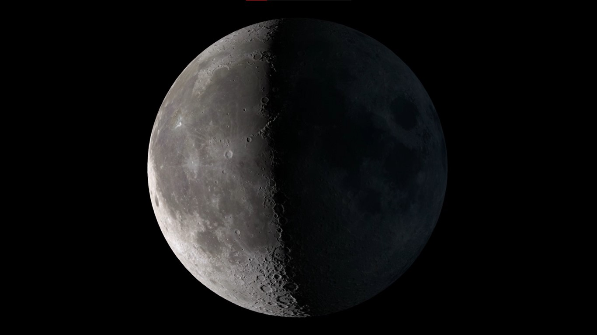
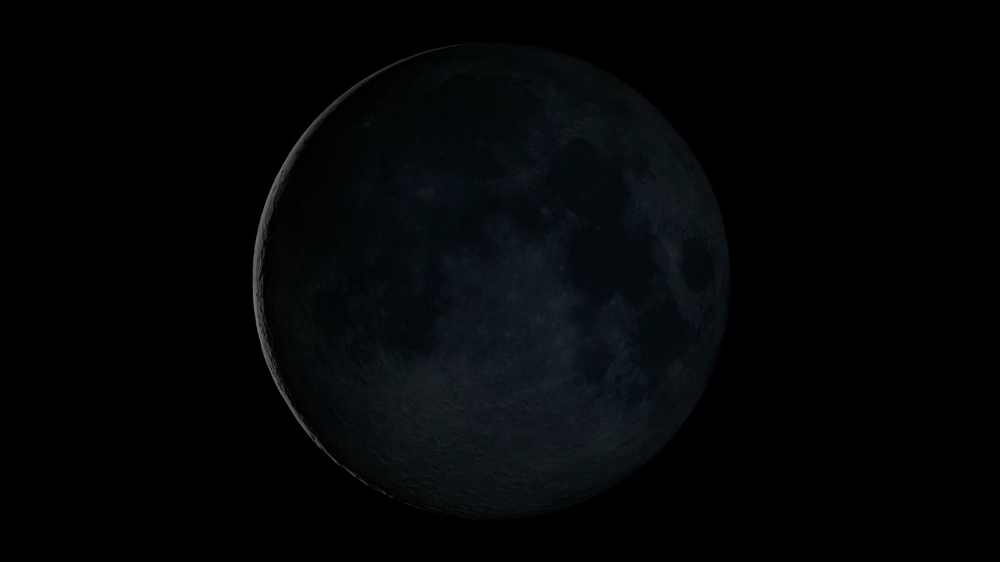
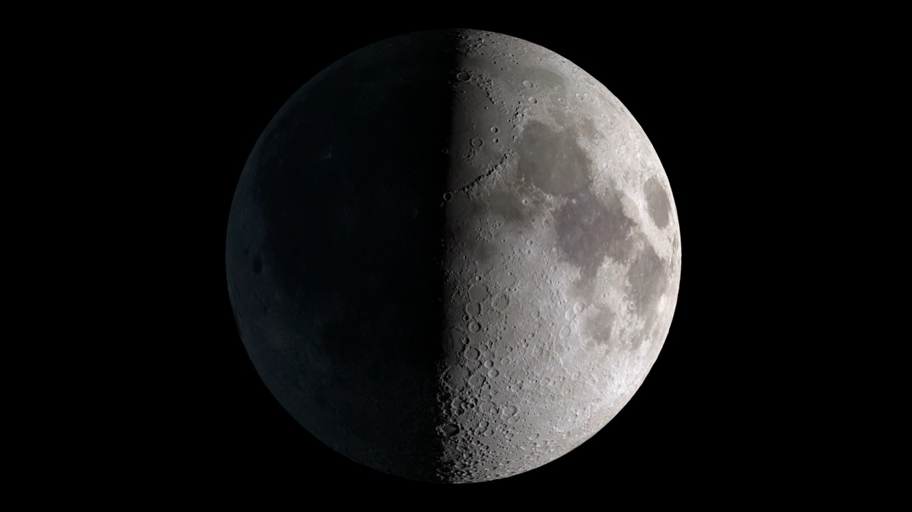

É quando vemos a Lua completamente iluminada pelo Sol. Nesta fase, a Lua está do lado oposto da Terra em relação ao Sol.

NASA
FASES DA LUA
QUARTO MINGUANTE
A Lua parece estar diminuindo após a fase de Lua Cheia. A metade esquerda da Lua (no hemisfério norte) começa a se tornar menos visível à medida que a Lua passa pela última metade de seu ciclo.

NASA
FASES DA LUA
LUA NOVA
Nesta fase, a Lua não é visível a partir da Terra porque está alinhada entre a Terra e o Sol, com a face iluminada voltada para longe da Terra.

NASA
FASES DA LUA
QUARTO CRESCENTE
Durante esta fase, a Lua parece estar crescendo. A metade direita da Lua (no hemisfério norte) começa a ser iluminada pelo Sol.